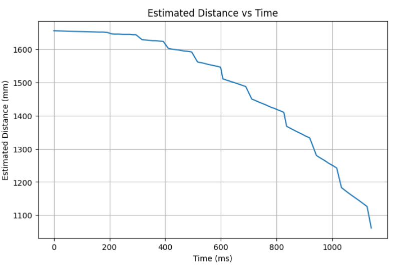
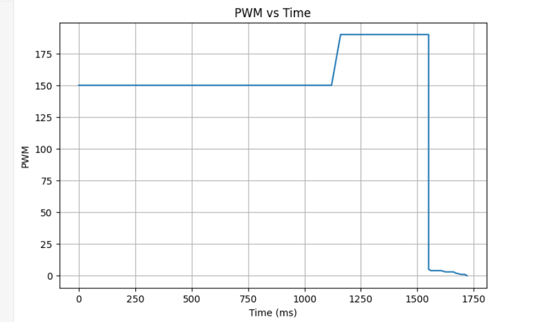
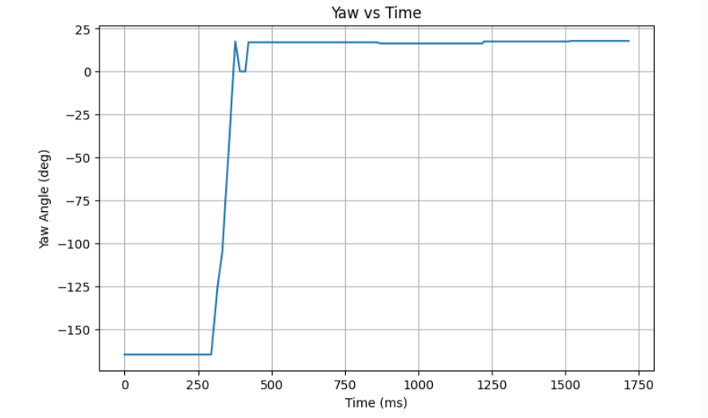

ECE 4160 – Fast Robots
The purpose of this lab was to use the tools we have learned up to this point to complete a stunt with the robot.
I chose to do the second option/task which was drift. This required me to drive the car forward fast and then initiate a 180 degree turn when the robot was within 3 feet of the wall. I split this task into three parts: 1) drive forward and detect when within 3 feet of the wall, 2) turn 180 degrees, 3) drive foward again. For the first part I gave a constant pwm value to go forward and used the tof sensor with the kalman filter to have a quick and accurate estimate of how fast the robot was from the wall. For part 2 I used my pi controller to turn the robot 180 degrees from its current position. Finally for part 3 I simply drive forward again for a short period of time (now going away from the wall).
I first started off by adding the structure for this stunt to my arduino code. I added twp new commands: "RUN_DRIFT_STUNT" and "SEND_STUNT_DATA". I also added global variables to control the desired states for this stunt. This included a boolean running_drift_stunt which was initialized false and set to true when the command "RUN_DRIFT_STUNT" was sent. It also included 3 variables to control which of the three parts of the stunt the robot was in. The first parts boolean was initialized to true and when the conditions were met to switch to the second part it would be set to false and the second part's boolean set to true. Likewise when the second part was done its boolean would be set to false and the 3 part's boolean set to true. This allowed me to use if statements in my loop to control which part of the stunt the robot was doing. To create plots I stored data for the kalman filter's distance estimate, the pwm values, and the estimated yaw values (using extrapolation). This data was stored in arrays and then sent using the "SEND_STUNT_DATA" command.
Since I decided to use the kalman filter to estimate the distance from the wall, I decided to use the exact same parameters as in part 7 to ensure that my filter would still work properly. In the loop I have an if statment which checks if the running_drift_stunt variable is true. Nested inside this if statement are my 3 if statements to check which part of the stunt the robot is in. Below is some of the code for part 1. I use my helper functions to implement the kalman filter and run a constant pwm value for the car until I get withing the distance (is adjusted sliglty from 914mm due to sensor inaccuracy). Once within the distance I set drift_forward_mode to false and drift_turn_mode to true allowing the robot to move on to part 2. I also keep track of the last updated value for car angle which is the last recorded angle plus 180 degrees. This allows me to havea target or set angle for part 2.
if (drift_forward_mode) {
Serial.println("drift_forward_mode");
int drift_dist = -1;
if (use_kalman_filter) {
time_arr_imu[pid_counter] = millis();
if (!kf_initialized) {
if (distance_sensor_2.checkForDataReady()) {
int init_dist = distance_sensor_2.getDistance();
distance_sensor_2.clearInterrupt();
reset_kf_from_measurement(init_dist);
distance_sensor2[real_val_counter] = init_dist;
time_arr_imu_real[real_val_counter] = time_arr_imu[pid_counter];
real_val_counter += 1;
} else {
analogWrite(motorL1, 0);
analogWrite(motorL2, 0);
analogWrite(motorR1, 0);
analogWrite(motorR2, 0);
continue;
}
}
if (kf_initialized) {
drift_dist = get_kf_distance_mm();
distance_sensor2_we[pid_counter] = drift_dist;
}
Serial.print("Drift Distance: ");
Serial.println(drift_dist);
if (drift_dist > -1 && drift_dist < 1100) {
drift_forward_mode = false;
drift_turn_mode = true;
d_turn_t = millis();
} else {
analogWrite(motorL2, 0);
analogWrite(motorR1, 0);
analogWrite(motorL1, 150);
analogWrite(motorR2, 150*1.35);
}
if (update_yaw_dmp()) {
car_angle = wrap_angle(yaw_dmp+180);
}
pwm_data[pid_counter] = 150;
pid_counter++;
}
}
In order to ensure the robot always turns in the same direction I decided to run a constant pwm value for a short period of time to initiate the turn. I then switch to using my pi controller to complete the turn and properly align the robot to the desired angle. Here I use extrapolation to get quick estimate for the yaw angle of the robot. I use my pi_turn helper function from before which takes in the desired angle and rotate the robot to that angle using a pi controller. In the helper I also have it properly set part two boolean to false and the part 3 boolean to true for when the turn is complete.
if (drift_turn_mode) {
if (millis() < d_turn_t + 400) {
analogWrite(motorL1, 0);
analogWrite(motorL2, 190);
analogWrite(motorR1, 0);
analogWrite(motorR2, 190*1.35);
pwm_data[pid_counter] = 190;
int pos_d = 0;
if (update_yaw_dmp()) {
pos_d = yaw_dmp;
yaw_pos_we[pid_counter] = pos_d;
yaw_pos[real_val_counter] = pos_d;
time_arr_imu_real[real_val_counter] = millis();
real_val_counter += 1;
} else {
float dy = angle_diff(
yaw_pos[real_val_counter - 1],
yaw_pos[real_val_counter - 2]
);
float dt_real = float(
time_arr_imu_real[real_val_counter - 1] -
time_arr_imu_real[real_val_counter - 2]
);
float slope = 0.0f;
if (dt_real > 0) {
slope = dy / dt_real;
}
float time_elapsed = float(
time_arr_imu[pid_counter] -
time_arr_imu_real[real_val_counter - 1]
);
pos_d = yaw_pos[real_val_counter - 1] + slope * time_elapsed;
pos_d = wrap_angle(pos_d);
yaw_pos_we[pid_counter] = pos_d;
}
time_arr_imu[pid_counter] = millis();
pid_counter++;
} else {
yaw_pos[0] = car_angle;
pi_turn(car_angle);
Serial.println("drift_turn_mode");
}
}
Finally I simply drive the robot forward away from the wall for 600 milliseconds to complete the stunt.
if (drift_done_mode) {
while (millis() < drift_t + 600) {
analogWrite(motorL2, 0);
analogWrite(motorR1, 0);
analogWrite(motorL1, 150);
analogWrite(motorR2, 150*1.35);
}
analogWrite(motorL2, 0);
analogWrite(motorR1, 0);
analogWrite(motorL1, 0);
analogWrite(motorR2, 0);
}
I only track the distance (with Kalman filter) until the turn starts as it wouldn't be very useful after that. I also track the pwm values and the yaw angle estimates.
Before I added the set rotation for a period of time before using the pi controller I found that on some attempts the noise of the yaw readings would cause the robots to move one way and than the other a few times before finally turning in one direction. In this example it is pretty drastic, but this would mainly just cause the turn to have a short delay which was undersirable.
Here I make the rotation before pi last too long and the robot overshoots. This causes the pi to self correct.
Finally I use a duration that undershoots allowing the robots to have a clear decision on what direction to turn and letting the pi controller handle the rest.



The lab allowed me to combine previous capabilities of the car into one stunt (kalman filter, extrapolation, PI, driving forward, and turning!). Overall it was a great way to get comfortable with combining different componenets to accomplish a larger task.